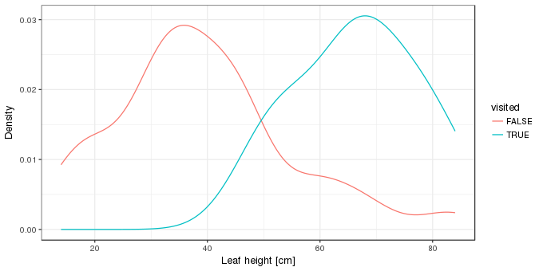
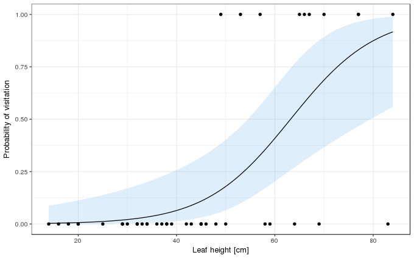

Prediction intervals for GLMs part I
Binomial GLMs
Posted in
Tagged
GLM models prediction interval statistical modelling logistic regression
Blogroll
One of my more popular answers on StackOverflow concerns the issue of prediction intervals for a generalized linear model (GLM). My answer really only addresses how to compute confidence intervals for parameters but in the comments I discuss the more substantive points raised by the OP in their question. Lately there’s been a bit of back and forth between Jarrett Byrnes and myself about what a prediction “interval” for a GLM might mean. Comments, even on StackOverflow, aren’t a good place for a discussion so I thought I’d post something here that went into a bit more detail as to why, for some common types of GLMs, prediction intervals aren’t that useful and require a lot more thinking about what they mean and how they should be calculated. For illustration, I thought I’d use some small teaching example data sets, but whilst writing the post it started to get a little on the long side. So, I’ve broken it into two and in this part I look at logistic regression.
The first example concerns a small experiment on the rare insectivorous pitcher plant Darlingtonia californica (the cobra lily) used as an example in Gotelli and Ellison (2013) and originally reported in Dixon et al. (2005). Darlingtonia grows leaves that are modified to form a pitcher trap, which is filled with nectar that attracts insects, in particular vespulid wasps (Vespula atropilosa). The observations in the data set are on the height of pitcher traps (leafHeight) and whether or not the leaf was visited by a wasp (visited). The code chunk below downloads the data from the book’s website and loads it into R ready for use.
darlurl <- "http://harvardforest.fas.harvard.edu/sites/harvardforest.fas.harvard.edu/files/ellison-pubs/2004/DarlingtoniaData3.txt"
darl <- setNames(read.fwf(darlurl, widths = c(8,9), header = FALSE, skip = 1L),
c("leafHeight", "visited"))
darl <- transform(darl, visited = as.logical(visited))Kernel density estimates of the distributions of the leaf heights for visited and unvisited leaves is one way to visualise these data. Here we use ggplot2
library("ggplot2")
theme_set(theme_bw())
xlab <- "Leaf height [cm]"
ggplot(darl, aes(x = leafHeight, colour = visited)) +
geom_line(stat = "density") + labs(x = xlab, y = "Density")
We’re interested in modelling the probability of leaf visitation as a function of leaf height. For this a binomial GLM is a logical choice, with the canonical link function, the logit or logistic function. Such a model is fitted using glm() as follows
m <- glm(visited ~ leafHeight, data = darl, family = binomial)
summary(m)Call:
glm(formula = visited ~ leafHeight, family = binomial, data = darl)
Deviance Residuals:
Min 1Q Median 3Q Max
-2.18274 -0.46820 -0.23897 -0.08519 1.90573
Coefficients:
Estimate Std. Error z value Pr(>|z|)
(Intercept) -7.29295 2.16081 -3.375 0.000738 ***
leafHeight 0.11540 0.03655 3.158 0.001591 **
---
Signif. codes: 0 '***' 0.001 '**' 0.01 '*' 0.05 '.' 0.1 ' ' 1
(Dispersion parameter for binomial family taken to be 1)
Null deviance: 46.105 on 41 degrees of freedom
Residual deviance: 26.963 on 40 degrees of freedom
AIC: 30.963
Number of Fisher Scoring iterations: 6
The model summary suggests an effect of leaf height that is unlikely to be observed if there were no effect. For a unit increase in leaf height, the odds of visitation increase by 1.12 times (given by exp(coef(m)[2])).
How the probability of visitation varies as a function of leaf height, as estimated by the binomial GLM, can be visualised by predicting for a grid of values over the observed range of leaf heights. An approximate 95% point-wise confidence interval can also be created for the fitted function. In this case, we should create the confidence interval on the scale of the linear predictor where we assume things behave in a more Gaussian-like manner, and then backtransform the calculated interval on to the probability scale using the invers of the link function. The code below shows a general solution for this, where the inverse link function is obtained from the family() object contained within the fitted GLM object
ilink <- family(m)$linkinv
pd <- with(darl,
data.frame(leafHeight = seq(min(leafHeight), max(leafHeight),
length = 100)))
pd <- cbind(pd, predict(m, pd, type = "link", se.fit = TRUE)[1:2])
pd <- transform(pd, Fitted = ilink(fit), Upper = ilink(fit + (2 * se.fit)),
Lower = ilink(fit - (2 * se.fit)))
ggplot(darl, aes(x = leafHeight, y = as.numeric(visited))) +
geom_ribbon(data = pd, aes(ymin = Lower, ymax = Upper, x = leafHeight),
fill = "steelblue2", alpha = 0.2, inherit.aes = FALSE) +
geom_line(data = pd, aes(y = Fitted, x = leafHeight)) +
geom_point() +
labs(y = "Probability of visitation", x = xlab)
So far, so standard; the confidence interval is just that, a Wald confidence interval on the fitted function based on the standard errors of the estimates of the model coefficients. It is not a prediction interval, however.
The fitted model can be interpreted as describing the binomial distribution for any given value of leafHeight. The binomial distribution is specified by two parameters; n the number of trials (specified via argument size in R’s dbinom() and related functions), and p the probability of success. In the Darlingtonia example, n is 1 because each leaf was the result of 1 trial; was the leaf visited or not during the experiment? p is given by \(g(\eta)^{-1} = g(\beta_0 + \beta_1 \text{leaf height})^{-1}\), where \(g\) is the logit link function and \(g^{-1}\) is its inverse. In other words, the probability parameter of the binomial distribution is a function of leafHeight.
To create a prediction interval for a value of leafHeight, we could look at the probability quantiles of the binomial distribution with size = 1 and prob = Fitted[leafHeight]. For example, for the minimum and maximum observed leaf heights the extreme 2.5% and 97.5% probability quantiles are
with(pd, qbinom(c(0.025, 0.975), size = 1, prob = head(Fitted, 1L)))
with(pd, qbinom(c(0.025, 0.975), size = 1, prob = tail(Fitted, 1L)))[1] 0 0
[1] 0 1
In the first instance, for the minimum observed leaf height, the prediction interval is 0. Yes, just 0. For the maximum observed leaf height the 95% prediction interval is 0–1. Neither of these is very useful; one isn’t even an interval in the usual sense of the word, and the other is so wide as to encompass both 0 and 1, which is no more information than we had before we started the whole exercise — a leaf can only be visited or not.
But this isn’t quite what we want; we’ve only explore the quantiles of the distributions conditional upon the estimated probability. A real prediction interval would account for the uncertainty in this estimate. For that, we need the upper and lower confidence limits for the estimated probability.
with(pd, qbinom(c(0.025, 0.975), size = 1, prob = c(head(Lower, 1L), head(Upper, 1L))))
with(pd, qbinom(c(0.025, 0.975), size = 1, prob = c(tail(Lower, 1L), tail(Upper, 1L))))[1] 0 1
[1] 0 1
I think we can all agree that these intervals aren’t really that useful…
Another way to use the fitted model is via what it says about the posterior density of the two possible predicted values, visited or unvisited. This can be computed using dbinom() using the code below, again for the minimum and maximum observed leaf heights
db <- with(pd, matrix(dbinom(x = rep(c(0,1), each = 2), size = 1,
prob = Fitted[c(1, 100)]),
ncol = 2))
colnames(db) <- c("NotVisited", "Visited")
rownames(db) <- with(pd, paste("leafHeight =", range(leafHeight)))
round(db, 4) NotVisited Visited
leafHeight = 14 0.9966 0.0034
leafHeight = 84 0.0831 0.9169
We see almost all the probability density on the unvisited option for leaves 14cm in height (which is also why the 95% interval we calculated earlier was all on unvisted (0), we’d need to go beyond a 99.7% interval to get the visited alernative (1) included in the interval). For leaves of 84cm, most of the density is on the visited outcome, but with approximately 8% on the unvisited outcome.
However, these values are exactly what we get if we just take the fitted probabilities for these leaf heights, which are given by the solid line in the plot we made earlier
with(pd, Fitted[c(1, 100)])[1] 0.003410958 0.916879065
These values are for the visited outcome, but subtract them from 1 and you have the values for the unvisited outcome
with(pd, 1 - Fitted[c(1, 100)])[1] 0.99658904 0.08312093
As before, this ignores the uncertainty in the estimated probability of visitation. The densities incorporating this uncertainty are shown in the table below
| Not Visited (lwr) | Not Visited (upr) | Visited (lwr) | Visited (upr) | |
|---|---|---|---|---|
| leafHeight = 14 | 0.9999 | 0.9125 | 0.0001 | 0.0875 |
| leafHeight = 84 | 0.4415 | 0.0103 | 0.5585 | 0.9897 |
One more thing we can do with the fitted model is simulate random outcomes from it. Again we do this for the minimum and maximum observed leaf heights, first for the lowest leaf height
nrand <- 10000
set.seed(1)
table(rbinom(nrand, size = 1, prob = with(pd, Fitted[1]))) / nrand 0 1
0.9977 0.0023
and then for the largest observed leaf height
set.seed(1)
table(rbinom(nrand, size = 1, prob = with(pd, Fitted[100]))) / nrand 0 1
0.0867 0.9133
The numbers should look pretty familiar — they are very close to both the posterior densities returned using dbinom() and the the fitted probabilities we just looked at. In fact, as nrand tends to infinity, the proportions of the two outcomes will also approach those given by dbinom(). As before, though I won’t show it, a complete interval would also include the uncertainty in the estimated probability.
In this example, the most useful outputs from the model are all based on the binomial distributions given values of leaf height. The interval given by the extreme 2.5th and 97.5th probability quantiles isn’t of much use at all; for the two values of leaf height we looked at the interval either wasn’t an interval or it told us no more information than we already possessed, that leaves either were or were not visited.
That said, this binomial GLM example is pretty extreme; the observed data only take values 0 or 1 and nothing else. However, this has been a useful exercise to think about what the fitted model represents.
In the second part of this post I’ll look at a model for a count response, which will start to look a little more interval-like than the one here.
Social